4. Tool
(1)Crop : You can crop a photo to remove unnecessary part of a photo or resize a photo in a different ratio.
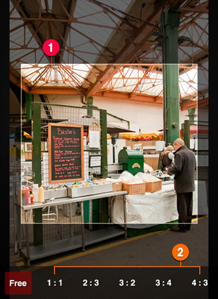
After you move ①Crop Line on the screen and change its ratio and size, by pressing Apply button you can end cropping.
②You can also preset a ratio first and then crop in that ratio.
(2)Rotate : You can rotate or mirror a direction of a photo.
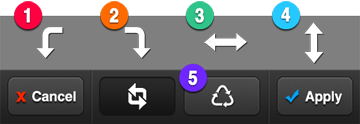
You can choose among ①clockwise rotation, ②counter-clockwise rotation, ③vertical mirror, ④horizontal mirror
⑤Reset button will call the original photo.
5. Color Adjustment
(1)Exposure : ①Brightness and ②Contrast adjustment (Right-end gets stronger, left-end gets weaker)
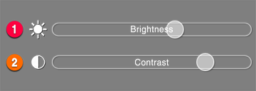
(2)Color : ③Saturation and ④Hue adjustment
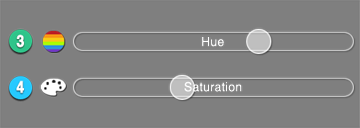
(3)White Balance : ⑤Color Temperature and ⑥Tint adjustment
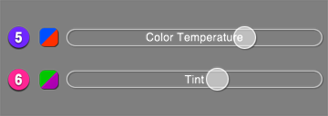
(4)Curves – Advanced feature : With manipulating curve, more delicate editing is available.
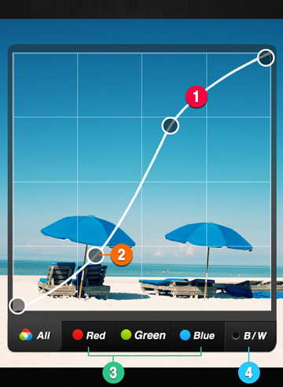
By tapping ①Curve Line, you can add ②Control Point on the line.
In order to change a shape of the curve, you just drag Control Points.
If you want to remove a control point, move the point over other points.
Right top of curve means bright part, left down means dark part.
For example, if you make the curve line a shape of S like the picture above, bright parts of a photo get brighter and dark ones get darker. Consequently, it strengthens contrast of a photo.
③Red, Green, Blue tab allows you to control each color’s curve and to change a tone of a photo in a various kind of colors.
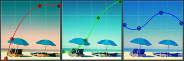
④B/W button let you control the curve within black and white tone, and you can make varied Mono-tone photos.
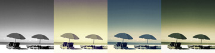
With ⑤Reset button, you can reset the curve line whenever you want. If you need help on use of the curve, you can learn how to use the curve by pressing ⑥Information button.
(5) Histogram–Advanced feature : Histogram allows you to do a more detailed control over exposure of a photo.
Histogram–Advanced feature : Histogram allows you to do a more detailed control over exposure of a photo.

①Histogram Graph shows the distribution of exposure. Right side indicates proportion of bright parts and left side indicates that of dark parts.
The more even a graph is, the more suitable exposure a photo shows.

②Auto button automatically adjust an exposure based on a graph.
③Black button (left) controls proportion of darkness and ④White button (right) controls that of brightness.
⑤Mid button indicates the ration of two buttons on both sides, so it moves as either of two side buttons moves.
Proportion of mid-tone can be adjusted by directly moving the Mid-button.
6. Add-ons
(1)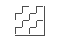Texture : By applying various types of texture to a photo, you can make your photo more stylish.
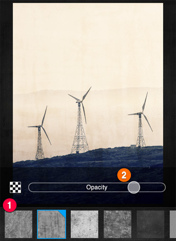
You can pick one from ①a stream of textures on the bottom and control its ②Opacity.
(2)Vignetting : Vignetting darkens or brightens edges of a photo.
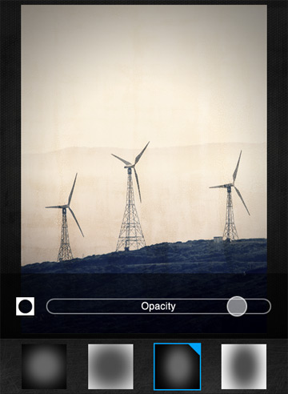
(3)Border : You can put your photo in lots of stylish frames.
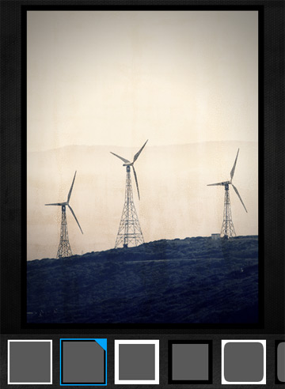
If you apply any effect after putting a frame over a photo, the effect will also change the frame.
We recommend you put a frame for the last of your editing.